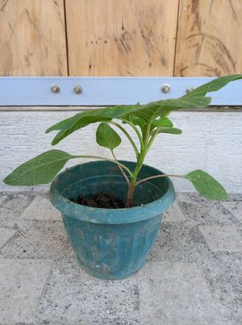
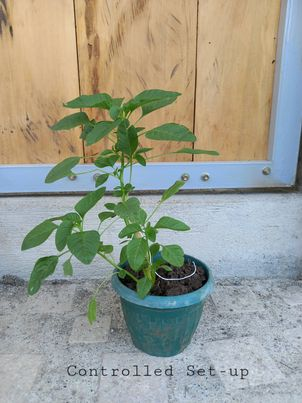
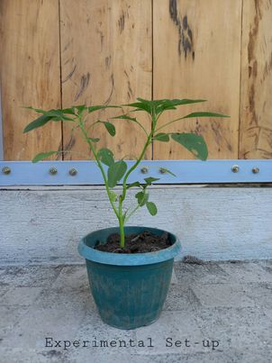

| Research Problem/Question | Hypothesis |
|---|---|
| Does the amount of compost affect the growth of plants? | If we add more compost, then the plants will absorb more nutrients. |
| Independent Variable | Dependent Variable |
|---|---|
| Amount of Compost | The health of spinach plant |
Controlled/Constant Variables
Amount of soil, Amount of Sunlight, Amount of Water
Controlled Set-up
Experimental Set-up 1
Experimental Set-up 2
Materials for Experiment
Shredded Paper as compost, water specifically 500 ml per plant to water, spinach plant as test plants, shovel and ruler for measuring
Procedure
First, we will collect our used and discarded paper and shred it using a paper shredder , in order to be able to get 60 grams of shredded paper. Shredding the shredded paper: Put papers into a large bucket and soak it in water for at least 30 minutes and by using your hand shred it and cut the pieces in order to have a soft and smooth texture. Then after soaking, drain the leftover water and use a strainer, and spread it on a flat surface to let it dry for at least 24 hours. We will be getting and sourcing our plants and plant soil from our groupmates' garden. Getting the soil: Clear the surface of the land to have a neat vision of the land, dig at least 10 inches from the surface and collect the soil from the bottom. Preparing the plant: Repot the existing plant from the garden by, removing the plant from its current grow pot, turn it sideways, hold the stem and leaves gently and tap the bottom of its vessel hard to let the plant slide out, loosen the roots, and put it in the new pot with the new soil collected.
I'am Asherah Payac, the leader of Group 4B from St. Edmund Campion, Iam 14 yrs old and I like to listen to music during my free time. I find crime books and documentaries interestigng, I also like anime and K-pop. My hobbies are watching movies and reviewing them in my journal, same with the books I have finished reading. This webpagem specifically for the SIP is created and designed by me.